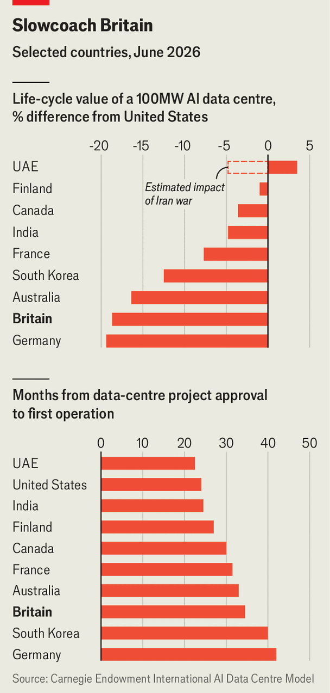

Britain is struggling to build data centres
It risks missing a big opportunity
Jul 30th 2026
East London’s neglected docklands have found a new life. In squat windowless buildings racks of computer servers purr in air-conditioning that sweaty local residents would kill for. These data centres were built a stone’s throw from Canary Wharf, a financial hub. Such proximity means superfast internet speeds, a crucial advantage in trading where a millisecond’s head-start can mint fortunes. The firms using these are often secretive; to enter Telehouse South, a new data centre, your correspondent passed through five layers of security. Some customers demand 12 separate checks, iris scans included.
Server farms are not just niche tech for financiers. They have become vital for all: to stream television, run video games, and power chatbots and artificial-intelligence tools. Demand is booming. “If we built six more facilities tomorrow,” says Julian Hennessy of Telehouse, “we would have customers to fill them.” Yet Britain has only a third as much data-centre capacity per person as America. By 2030 Britain hopes to have at least six gigawatts (GW) of capacity, up from 2GW now. America could reach over 90GW by then, up from 29GW today.
Britain’s data-centre woes are depressingly familiar for British economists. Crippling industrial electricity prices (almost four times higher than in America) make the facilities expensive to run. Sclerotic planning rules and a long queue for connecting the centres to the electricity grid make them hard to build in the first place. Hugh Milward of Microsoft, a software giant, complains: “It can take 18 months to build a data centre but eight years to get a grid connection.” These delays are a serious liability in a world where the speed of building, as opposed to cost or location, is the decisive factor for impatient investors.
The question for Britain and Europe generally is how much being a laggard behind America matters. As James Wise, chair of the government’s Sovereign AI unit, points out, “It’s not true that the only way to have more AI companies is to have more data centres.” The most compelling way for countries to achieve AI sovereignty is to have leverage that stops them from being prisoners in the race for AI supremacy. For Britain, this will never come from having an abundance of data centres, as it might for the Gulf states. But it can come from doubling down on the country’s strengths in research and a services sector well-placed to find lucrative uses for AI.
If so, Britain could outsource most of its data-centre needs to places like Finland, which have cheaper electricity and more available land. Some geographic diversification would be wise—no single country should be able to hold Britain to ransom—but there would be no need for racks of servers to sully Albion’s shores.
Although Britain’s data-centre struggles are not a death sentence, they are a worry. Uses where time is of the essence, like financial trading or self-driving cars, need servers nearby. Telehouse South can communicate with traders in Canary Wharf in less than a millisecond; using a New York server can take over 70 times as long. There are other uses, such as for national security or confidential health information, where authorities could insist in the future on storing data on sovereign soil.
And then there is the economic value that these businesses will continue to generate. The scale is hard to predict because nobody knows where in the AI supply chain the most money will be made. Data centres could become so abundant that they turn into low-margin businesses. But many think that there will be a shortage for years to come. Mr Wise can imagine software companies routinely giving 30% to 40% of revenues to inference providers, the businesses generating AI’s responses to queries. He worries that if these services use data centres abroad, the taxman would forgo a lot of revenue.

The good news is that, for now, data centres are obscenely lucrative once they are running, so subsidies are not needed. The main thing the government needs to do is sort out grid connections. The Carnegie Endowment for International Peace, a think-tank, reckons that the lifetime value of a 100MW data centre is 19% lower in Britain than in America. The biggest reason is the time taken to connect to power, which is bad enough in America but on average ten months longer in Britain (see chart).
Britons’ first-come, first-served approach to queuing has proved disastrous for the grid. Data-centre developers swamped the system with speculative applications long before projects were ready. The queue’s length tripled from 41GW to 125GW between November 2024 and June 2025 (peak British electricity demand is only 45GW). The government has clocked the problem. It is weeding out unserious entries from the queue and has set up AI “growth zones” across Britain where data centres will get priority grid access. But progress is slow, with many of these reforms stuck in consultation. Mr Milward of Microsoft says a “much faster pace” is needed. One option, reformers suggest, is letting data centres pay to queue-jump.
Although Britain is flailing against American competition, it does have one crucial advantage: Americans hate data centres. A recent poll by Gallup found that 71% oppose them being built locally, seeing them as wasting scarce water and energy resources. Britons, meanwhile, are still scratching their heads about what the things are. Around seven in ten know little or nothing about them, according to a survey by Public First, a consultancy.
That ignorance offers a window to argue for more data centres. The downsides are limited. Water-usage scare stories are overblown. The businesses might actually ease electricity costs as more users allow the expenses of new grid infrastructure to be spread more widely. And, although data centres might not be essential to British AI success or achieving meaningful sovereignty, they could still mint money for the exchequer, just as they currently do for Canary Wharf’s traders. ■